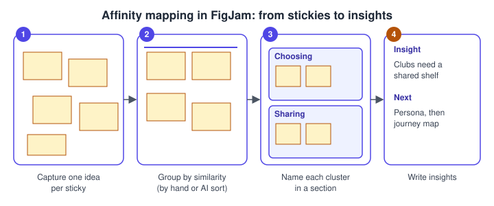
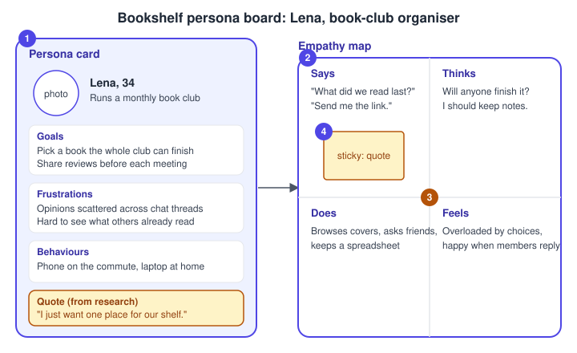
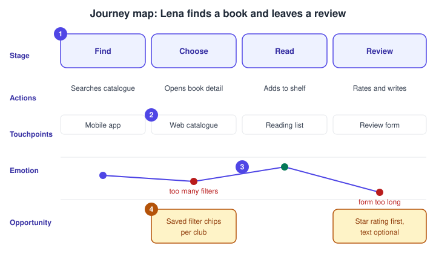

Research, Personas and Journey Maps
|
This content was generated with the assistance of AI and should be verified against the official documentation before being relied on in production. |
This page was written on 2026-10-30 against the UI3 interface. Research artefacts live in FigJam, Figma’s whiteboard product, which is generally available (it is not a beta). Anyone who can edit a FigJam file can place stickies, shapes and connectors; which seat type you need to edit depends on your plan, so check Plans, Seats and AI Credits. FigJam AI tools (such as sorting stickies) are subject to plan and seat requirements and are metered by AI credits. The product map is on Introduction and Product Family.
The method behind this page is design thinking, described on UX Process and Design Thinking. Here the running example is Bookshelf: you research how book clubs choose and discuss books, synthesise what you learn, and end with a persona ("Lena, book-club organiser"), an empathy map and a journey map. Those artefacts feed Information Architecture and User Flows and Wireframing and Fidelity.
Research methods at a glance
Research answers two different questions: what people do and say (behaviour), and why (motivation). A small project usually mixes a few methods rather than relying on one.
| Method | Typical use | Bookshelf example |
|---|---|---|
User interviews |
Understand goals, habits and frustrations in depth |
Talk to five book-club organisers about how they pick a book |
Surveys |
Count how common an attitude or behaviour is |
Ask club members how many books they finish per quarter |
Observation or contextual inquiry |
See what people really do, not what they report |
Watch a club meeting where members share recommendations |
Competitor review |
Learn conventions and gaps in similar products |
Compare how existing reading apps show reviews |
Analytics and support feedback |
Find where real users struggle |
Review search terms with no results |
Usability testing |
Check whether a design works |
Covered on Usability Testing and Iteration |
Figma’s own resource library recommends interviews, surveys, talking to sales and support, and reviewing analytics when building a persona, which matches this mix. A small sample gives directions, not statistics: label findings from five interviews as qualitative.
Capturing notes in FigJam
Create a FigJam file for the project (from the Files tab of the left navigation bar in UI3, or the create menu of a folder) and keep one board per study. A reliable layout is one section per interview, holding that participant’s stickies, so that you can still trace each note back to its source.
-
Add a sticky from the bottom toolbar (the shortcut is S in the FigJam shortcut list; check the shortcuts panel in your account) and write one observation, quote or need per sticky.
-
Keep notes short and in the participant’s words, for example "I just want one place for our shelf".
-
Colour-code by type (quote, behaviour, pain point) or by participant, and say in a legend which colour means what.
-
Put each interview into a section so you can move or collapse it as a unit.
Stickies, sections, connectors, stamps and voting are covered in detail on the FigJam page of this sub-section when it is available; this page uses only the basics.
Source: Figma Learn: Guide to FigJam
Synthesising with affinity mapping
Affinity mapping turns dozens of loose notes into a few insights. You group notes that are similar, name each group, and then write what the group means.

Source: Figma Learn: Guide to FigJam
-
Capture: one idea per sticky, copied from your interview notes.
-
Group: drag stickies that mean the same thing next to each other, without naming them yet. Resist sorting into categories you decided beforehand; let the groups emerge.
-
Name: put each cluster in a section and give the section a label (for example "Choosing" and "Sharing").
-
Insight: write one sentence per cluster that starts from the user’s need ("Clubs need a shared shelf") and pin it beside the cluster.
FigJam also offers an AI tool to sort and summarise stickies, which groups ideas by theme or summarises a discussion. Figma’s help page lists it for the Professional, Organization, Enterprise and Education plans, and says that in shared files you need edit access and a seat that supports the product. Treat the result as a first draft: a 2024 test by a third party found that the wording of the stickies strongly changed how they were grouped, so review and adjust by hand. The exact sort options in the menu were not confirmed for this page.
Voting is a useful last step: give each participant a few stamps or votes and let the group mark the clusters that matter most, so that priorities do not come only from the loudest voice.
Personas
A persona is a fictional but research-based profile that stands for a group of users. It is a communication tool, not a person: if a detail is not supported by research, leave it out. Figma’s resource library lists typical elements as demographics, personality traits, behavioural attributes, pain points, frustrations and motivations, and describes steps from researching users to identifying segments, gathering background and writing a short bio. Choose the details that change design decisions; income or hobbies rarely do.

-
Persona card: name, age, role and a one-line context, then goals, frustrations and behaviours taken from the affinity clusters.
-
Empathy map: four quadrants around the persona for what they say, think, do and feel. Figma’s template page describes empathy maps through quadrants for what the user sees, says, does and hears, so the quadrant labels vary between templates; pick one set and use it consistently.
-
Focus item: the clearest tension in the research, here the gap between wanting a shared shelf and having scattered chat threads.
-
Quote sticky: a real quote from a participant, marked as such, which keeps the persona honest.
Write personas from patterns across several participants. Avoid stereotypes, and avoid inventing demographics to make a card look complete. Where real photos are unavailable, a neutral placeholder avoids implying a real person. Figma’s resource library mentions generating a persona image with Figma Weave, a separate product; if you use generated images, label them as illustrative.
Journey maps with touchpoints
A journey map follows one persona through a goal over time. Figma’s resource library lists its components as the persona, the journey stages, the touchpoints (direct and indirect interactions), pain points, the actions, thoughts and feelings at each step, and the opportunities that follow from them.

-
Stages: the columns across the top (Find, Choose, Read, Review). Name them from the user’s point of view.
-
Rows: actions and touchpoints below each stage. A touchpoint is any place the user meets the product: the mobile app, the web catalogue, the reading list, the review form.
-
Emotion curve: plot how the persona feels at each stage; dips mark pain points, here "too many filters" and "form too long".
-
Opportunities: ideas tied to the dips, such as saved filter chips per club or a star rating first with optional text.
Build the map in FigJam from sections, tables or shapes and connectors, so every cell is a sticky that can be moved. Start from evidence: each pain point should trace to a cluster on the affinity board. The map then becomes the backlog for the next steps: an opportunity such as "star rating first" becomes a screen in the "find a book and leave a review" flow.
Templates
Figma offers templates for personas, empathy maps and journey maps, listed on its templates site, and the Community hosts many more. Official template pages describe persona cards, quadrant-based empathy maps and customer journey maps as ready-made FigJam starting points. Community files are made by individuals, so check the author, rating and update date before reusing one, and adapt it rather than filling it in blindly. Official templates give structure; they do not replace the research that fills them.
Where older guides are outdated
-
The 2022 and 2026 Staiano editions and the 2024 Green and Brandon book introduce FigJam brainstorming, personas and journey maps. FigJam has changed since the earliest of these: for example FigJam AI, described as in beta in the 2024 book, is now part of the AI tools with plan, seat and credit requirements, and the seat names in older books ("editor", "viewer") predate the Full, Dev, Collab and View seats (since 2025-03-11).
-
Interface paths in the older books describe the pre-UI3 layout. UI3 has been the only interface since 2025-04-30, and the left navigation bar was redesigned on 2026-01-07.
-
Methods such as interviews, personas and journey maps do not depend on a tool version; take the method from the books and the tool steps from the current help articles.